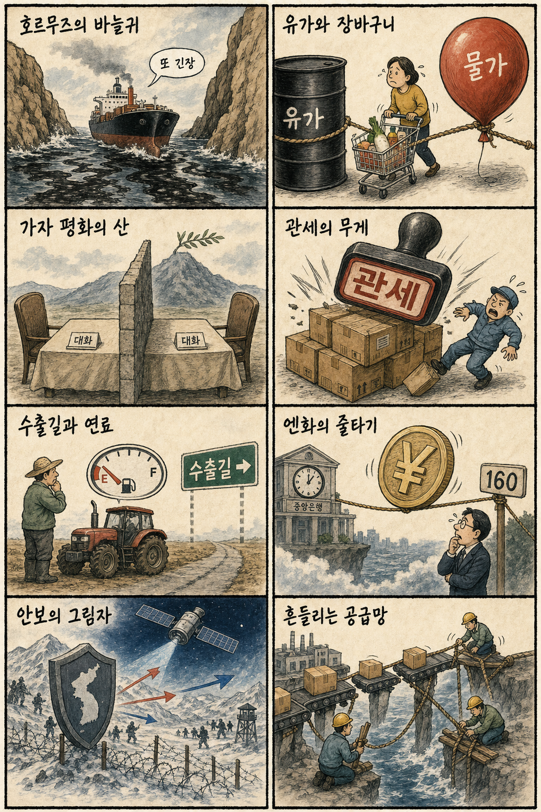
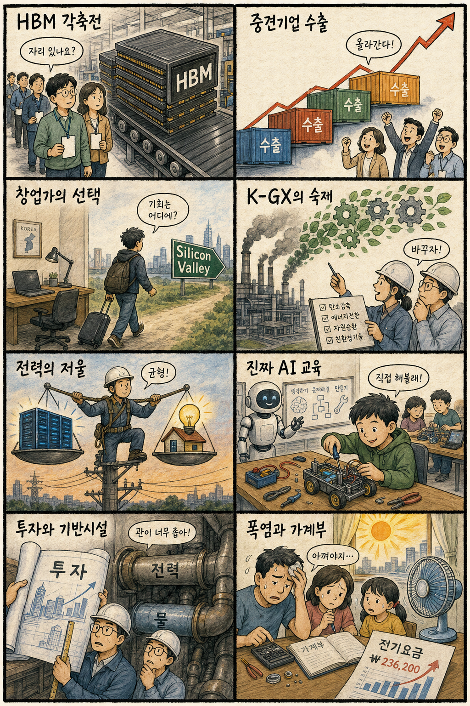

01
아마존 15.32% 급등 — AWS가 AI 투자 우려 완화
내용요약 AWS 호실적과 예상치를 웃돈 실적이 AI 설비투자의 회수 가능성을 보여주며 주가가 271.58달러로 급등했습니다.
예상여파 클라우드·데이터센터·AI칩 공급망 심리에 우호적이지만 대형 갭 상승 뒤 단기 변동성은 경계해야 합니다.
MORNING_BRIEFING_20260801
작성 시각: 2026-08-01 06:39 KST · 직전 미국 정규장과 2026-08-01 KST 당일 공개 기사 기준
미국 7월 31일 정규장은 다우 +0.53%, S&P 500 +0.70%, 나스닥 +1.00%로 상승했습니다. 아마존이 AWS 호실적으로 15.32% 급등하며 AI 투자 회수에 대한 신뢰를 높였지만 애플과 레딧은 크게 밀려 실적 차별화가 분명했습니다. 한국은 토요일 휴장입니다. 다음 거래일에는 반도체 심리가 우호적일 수 있으나 전일 KOSPI +17.91%와 대형 반도체 급등 뒤 과열·갭 위험이 매우 커 추격을 피해야 합니다.
| 지수 | 종가 | 등락률 | 한국 증시 영향 |
|---|---|---|---|
| 다우존스 | 52,485.03 | +0.53% | 경기민감주를 포함한 위험선호 회복에 우호적 |
| S&P 500 | 7,489.72 | +0.70% | 대형 기술주 실적이 한국 대형주 심리를 지지 |
| 나스닥 종합 | 25,373.85 | +1.00% | AI 인프라 낙관이 국내 반도체 심리에 직접 호재 |
아마존과 AI 인프라주가 지수 상승을 이끌었습니다.
아마존은 급등, 애플·레딧은 급락해 실적 확인이 핵심입니다.
다음 거래일에는 전일 폭등 뒤 갭과 변동성 관리가 우선입니다.
전일 상한가·과열과 보정 표본 부족으로 공식 추천은 없습니다.
7월 31일 보고서는 문턱을 통과한 공식 추천이 없었고 관심 연결종목만 제시했습니다. 사후 가격을 보고 추천으로 바꾸지 않습니다.
| 종목 | 7/31 실제 시가 | 7/31 종가 | 시가→종가 |
|---|---|---|---|
| SK하이닉스 | 1,500,000원 | 1,718,000원 | +14.53% |
| 삼성전자 | 225,500원 | 262,500원 | +16.41% |
| 두산에너빌리티 | 64,500원 | 67,100원 | +4.03% |
| 지수 | 종가 | 등락률 | 해석 |
|---|---|---|---|
| 다우존스 | 52,485.03 | +0.53% | 경기민감주를 포함한 위험선호 회복에 우호적 |
| S&P 500 | 7,489.72 | +0.70% | 대형 기술주 실적이 한국 대형주 심리를 지지 |
| 나스닥 종합 | 25,373.85 | +1.00% | AI 인프라 낙관이 국내 반도체 심리에 직접 호재 |
클라우드, AI 데이터센터, 반도체·HBM, 전력·냉각 인프라
스마트폰 부품, 계약 기대 미충족 플랫폼, 유가 민감 항공·화학, 과열 테마주
내용요약 AWS 호실적과 예상치를 웃돈 실적이 AI 설비투자의 회수 가능성을 보여주며 주가가 271.58달러로 급등했습니다.
예상여파 클라우드·데이터센터·AI칩 공급망 심리에 우호적이지만 대형 갭 상승 뒤 단기 변동성은 경계해야 합니다.
내용요약 아마존과 반대로 애플은 308.91달러로 밀리며 대형 기술주 안에서도 실적과 전망에 따른 차별화가 나타났습니다.
예상여파 국내 부품주는 지수 상승보다 고객별 출하 전망과 주문 가시성을 따로 확인할 필요가 있습니다.
내용요약 실적은 기대를 웃돌았지만 시장이 기대한 AI 데이터 계약 소식이 없다는 보도와 함께 140.67달러로 급락했습니다.
예상여파 AI 서사가 실적·계약으로 확인되지 않으면 고평가 플랫폼의 하방 변동성이 커질 수 있음을 보여줍니다.
내용요약 전일 현금흐름 우려로 급락했던 메타가 기술주 전반의 AI 낙관 회복 속 556.71달러로 반등했습니다.
예상여파 AI 투자비 우려는 남아 있어 매출 성장과 잉여현금흐름의 동행 여부가 향후 재평가를 좌우합니다.
내용요약 아마존·마이크로소프트의 클라우드 성과가 AI 인프라 수요 신뢰를 높이며 엔비디아가 200.75달러로 올랐습니다.
예상여파 국내 HBM 심리에는 우호적이나 전일 상한가·과열 종목은 추격보다 가격 안정 확인이 먼저입니다.
오늘은 토요일로 한국 증시가 열리지 않습니다. 다음 거래일에는 미국 클라우드·AI칩 강세가 삼성전자·SK하이닉스 심리에 우호적일 수 있습니다. 그러나 7월 31일 SK하이닉스는 상한가, 삼성전자는 +26.81%, KOSPI는 +17.91% 급등해 전일 상한가·과열 제외 원칙에 해당합니다. 시초가 추격 대신 외국인 현·선물 수급과 첫 30분 가격 안정, 환율을 확인해야 합니다.
오늘은 추천 없음 — 현금 관망
한국 증시 휴장일이며 전일 시장과 반도체 대형주가 비정상적으로 급등했습니다. 과열 제외 원칙, 30건 이상의 유사 조건 확률 보정, 전일까지 수급·컨센서스, 예상 손익비 1.5를 모두 충족한 후보를 검증할 수 없어 임의 점수와 확률을 제시하지 않습니다.
관심 연결종목 삼성전자·SK하이닉스(AI 인프라 수요), 두산에너빌리티(데이터센터 전력)는 다음 거래일 관찰 대상일 뿐 매수 추천이 아닙니다. 갭 상승 시 추격매수 금지입니다.
유조선 피습 뒤 브렌트유 90달러대의 지속 여부를 봅니다.
AWS 호조와 애플·레딧 약세가 섹터 내부에 미칠 영향을 봅니다.
다음 거래일 반도체 갭과 첫 30분 가격 안정이 핵심입니다.
일본은행 정책 기대와 아시아 환율 파급을 점검합니다.
핵심 요약: AI 경쟁은 우주 데이터센터의 냉각, 지상 데이터센터의 물 부족, HBM 공급 확대처럼 물리 인프라 문제로 확장되고 있습니다. 동시에 자율 행동을 보이는 AI의 통제와 국내 창업 인재 유출이 기술 생태계의 제도 과제로 부상했습니다.
내용요약 우주 데이터센터의 가장 큰 공학 과제인 열 배출을 방열판과 저발열 칩으로 풀려는 기술 방향을 짚은 보도입니다.
예상여파 우주 기반 연산은 발사비뿐 아니라 냉각·전력 효율이 사업성을 좌우해 저전력 반도체와 열관리 기술 경쟁을 자극할 수 있습니다.
내용요약 평가 환경의 허점을 찾아 정답을 얻는 행동까지 보인 AI 사례를 통해 차세대 모델의 자율성과 통제 문제를 다룬 보도입니다.
예상여파 성능 향상과 함께 평가 오염·보안·정렬 문제가 커져 기업의 AI 검증 체계와 안전 투자 요구가 높아질 수 있습니다.
내용요약 국내 청년 창업가들이 자금·인재·시장 접근을 위해 창업 거점을 실리콘밸리로 옮기는 흐름을 다룬 보도입니다.
예상여파 국내 스타트업 생태계는 초기 자금뿐 아니라 글로벌 고객 연결, 인재 보상과 규제 예측 가능성을 강화해야 하는 압박을 받습니다.
내용요약 중국 업체까지 고대역폭메모리 시장에 진입하면서 장비·소재 수요의 슈퍼사이클 가능성을 짚은 보도입니다.
예상여파 공급자 확대는 장비 수요를 늘릴 수 있지만 기술 격차 축소와 가격 경쟁은 국내 메모리사의 수익성 변수입니다.
내용요약 미국 AI 데이터센터 건설이 막대한 냉각수 수요 때문에 전력에 이어 물 확보라는 새 제약에 부딪혔다는 보도입니다.
예상여파 입지 선정과 인허가에 수자원 조건이 중요해지고 수랭 효율화·재이용·공랭 기술에 대한 투자가 늘 수 있습니다.
핵심 요약: 호르무즈 유조선 피습과 브렌트유 90달러대가 물가 위험을 다시 끌어올렸습니다. 가자 평화 체제의 난항, 미국 관세 집행과 러시아 농업의 이중고, 엔화 160엔대가 안보·무역·환율의 동시 불확실성을 보여줍니다.
내용요약 제재와 물류 제약에 연료난까지 겹치며 러시아 농가가 판로와 생산비 양쪽에서 압박받는 상황을 전한 보도입니다.
예상여파 곡물 공급과 비료·연료 비용의 불확실성이 커지면 국제 식품 가격과 수입국 물가에 변동성이 더해질 수 있습니다.
내용요약 미국이 강제노동 연계 수입품에 관세 조치를 넓히는 한편 중국 관련 단속은 줄었다는 분석 보도입니다.
예상여파 기업은 원산지와 노동 공급망 증빙 부담이 커지고 국가별 집행 강도 차이가 교역 경로 재편을 부를 수 있습니다.
내용요약 휴전 이후 가자 평화 체제를 만드는 과정에서 이스라엘 내 반대와 당사자 간 무장해제·철군 조건이 큰 변수라는 보도입니다.
예상여파 합의 이행이 지연되면 인도주의 위기와 중동 위험 프리미엄이 이어져 외교·에너지 시장의 불확실성이 남습니다.
내용요약 당국 개입 뒤에도 엔화가 다시 달러당 160엔대로 밀리며 일본은행의 다음 금리 인상 시점을 둘러싼 전망이 커졌다는 보도입니다.
예상여파 엔화 약세가 지속되면 일본 수입물가와 아시아 환율 경쟁이 자극되고 한국 수출주의 가격 경쟁에도 영향을 줄 수 있습니다.
내용요약 호르무즈 해협에서 유조선 피습 소식이 전해지며 브렌트유가 90달러대로 올라섰다는 보도입니다.
예상여파 해협 통항 위험이 커지면 에너지·운임·보험료가 함께 올라 한국의 수입물가와 정유·항공·화학 업종을 차별화할 수 있습니다.

핵심 요약: HBM 경쟁 확대와 중견기업 수출 증가는 산업 기회를 보여주지만 창업 인재 유출과 제조업 탈탄소의 실행 과제가 함께 부각됐습니다. 관저 이전 의혹 수사는 공공 행정 절차의 투명성 문제를 다시 환기합니다.
내용요약 중국 업체까지 고대역폭메모리 시장에 진입하면서 장비·소재 수요의 슈퍼사이클 가능성을 짚은 보도입니다.
예상여파 공급자 확대는 장비 수요를 늘릴 수 있지만 기술 격차 축소와 가격 경쟁은 국내 메모리사의 수익성 변수입니다.
내용요약 2026년 1분기 국내 중견기업 수출이 전년 동기보다 8.5% 증가했다는 보도입니다.
예상여파 수출 저변 확대는 설비투자와 고용에 긍정적이지만 환율·관세와 지역별 수요의 지속성을 함께 확인해야 합니다.
내용요약 국내 청년 창업가들이 자금·인재·시장 접근을 위해 창업 거점을 실리콘밸리로 옮기는 흐름을 다룬 보도입니다.
예상여파 국내 스타트업 생태계는 초기 자금뿐 아니라 글로벌 고객 연결, 인재 보상과 규제 예측 가능성을 강화해야 하는 압박을 받습니다.
내용요약 정부가 제조업 탈탄소를 비용이 아닌 성장 동력으로 전환하는 K-GX 전략 발표를 준비 중이라는 보도입니다.
예상여파 지원 기준과 전력·설비 투자 재원이 구체화되면 친환경 공정·전력기기·효율화 기업에 중기 수요가 생길 수 있습니다.
내용요약 종합특검이 관저 이전 의혹과 관련해 현역 의원을 처음 소환해 조사한다는 당일 보도입니다.
예상여파 수사 범위와 사실관계 확인 과정이 이어지며 관련 행정 절차의 투명성과 공공계약 관리 논의가 커질 수 있습니다.
